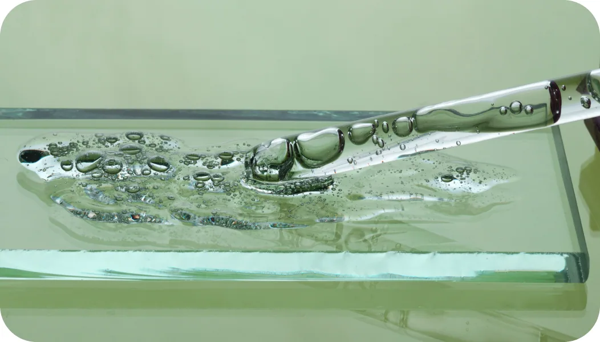

HOME
HOME- 보유기술
- 추출/정제 기술
추출/정제 기술
Extraction & Purification
추출/정제 기술
효율적인 원료 스크리닝 및 추출 기술을 통해 얻어진 식물성 화합물로부터 고기능성 원료를 개발하고 있습니다.
국내외 고유 자생식물 및 해외의 다양한 열대식물 등으로부터 유효성분(피토케미컬 등)을 추출·분리합니다.
-
STEP 01
원료 스크리닝
Screening of actives[Domestic & Tropical]
-
STEP 02
추출 및 정제
Identification, Specific
extraction & Purification -
STEP 03
다기능 원료 배합
Blends for
multi-functions

Purification systems
높은 수율의 정제 산물 제조를 위한 보유 시스템
- 1멤브레인(membrane)시스템
- 2양/음이온 컬럼 크로마토그래피 (column chromatography) 시스템